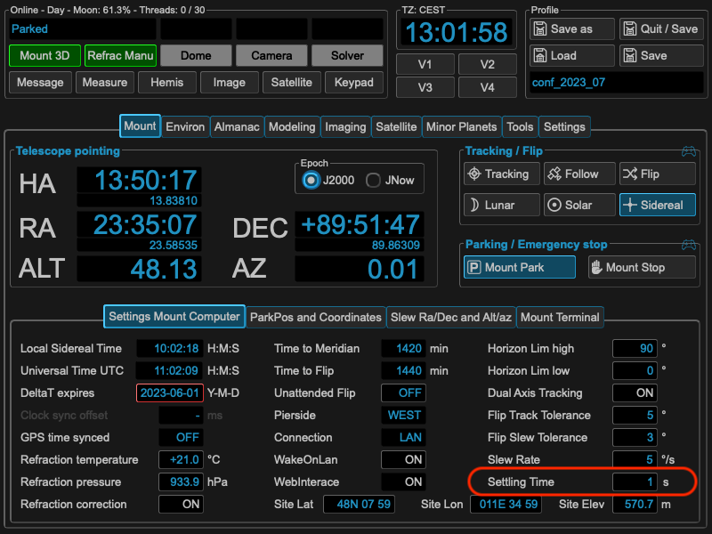

Settling Time / Waiting Time¶
To accommodate several different use cases MW4 implements additional waiting times to the core settling time, which is implemented and user directly from the mount computer. The following image shows the setting of this parameter, which could be also set and altered through 10micron tools.
This settling time is valid for all slews and movements of your mount once set. Please have a look to the 10micron spec where this behaviour has to be taken into account. Nevertheless for the modeling part MW4 add two more parameters as the modeling process need heavy movement of the mount. Therefore MW4 call these parameters not settling time but waiting time. These parameters could be set under the mount parameters:

The working principle is as follows: MW4 initiates a slew. This command is run by the mount computer and takes the internal settling time into account. This means after the mount came to physical stop, the mount computer will send the signal slew finished after this time period (upper image). This is the case in all used cases and will applied also during modeling process.
For the modeling process MW4 adds a waiting time before moving on after slew, which means waiting the addition set time before starting a next exposure (you know that MW4 runs asynchron for slew, expose and plate solve to improve speed). The wait is only applied during the modeling process.
Furthermore MW4 will differentiate if the mount starts and stops on the same pierside or if the was a meridian flip of the mount. For both cases you could set the waiting time.